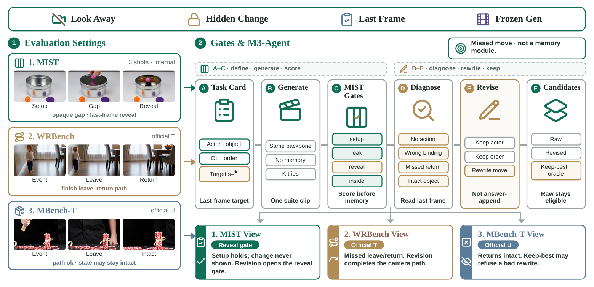
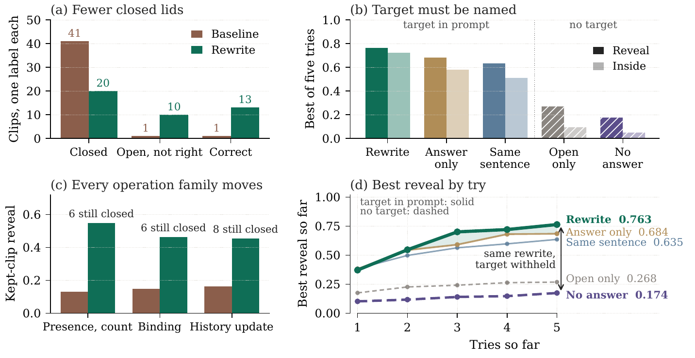
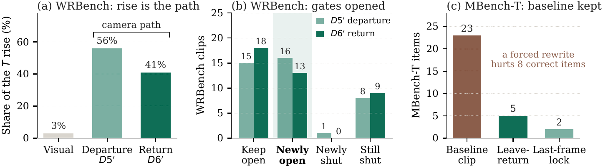

Overview
A memory score should separate three questions: was the scene set, was the change carried out, and does the last frame show it. Suites fold them into one total, so a miss reads as forgetting. MIST hides the target, then asks for it later. M3-Agent rewrites the failed move. The kept clip is an oracle: the same judge both scores and selects. That does not show the model stored the target.

What one clip is asked
Baseline, 43 cases: setup 0.852, leak 0/43, reveal 0.147, inside 0.047, and 41 clips never open. One kept rewrite: setup 0.851, reveal 0.492, inside 0.442. This 0.492 is MIST reveal, not an MBench state score. Best-of-five inside is 0.721, a different cell.
M3-Agent
At test time the agent reads the last frame, names the visible failure, and rewrites only that move. Actor, objects, and order stay. On MIST it regenerates the last shot five times and keeps the original eligible. Ties keep the earlier clip.

One kept clip, then five tries
One kept clip is not best of five. Labels move from 41 never-open and 1 correct to 20 never-open, 10 wrong inside, and 13 correct.

| What we do | Answer in prompt | Reveal | Inside | Closed | Ok |
|---|---|---|---|---|---|
| Look, then change the move | yes | 0.763 | 0.721 | 5 | 29 |
| Write the target, same move | yes | 0.684 | 0.581 | 3 | 24 |
| Same sentence, new seed only | yes | 0.635 | 0.512 | 4 | 21 |
| Open and hold | no | 0.268 | 0.093 | 6 | 3 |
| Look, then change the move | no | 0.174 | 0.047 | 28 | 2 |
Same judge, K = 5. Naming the target already reaches 0.684. Rewriting the move reaches 0.763, but both arms may name the target. Withheld, the rewrite is 0.174 and 28 lids stay closed.
Official suites
These 10-second official suites use their own scorers. They are not the internal three-shot probe, and they do not share one fix.

| Suite | Baseline | Keep-best | n | What the gain is |
|---|---|---|---|---|
| WRBench unique T | 0.452 | 0.570 | 40 | Completing a missing leave–return. Caption stays task-context none. |
| MBench-T unique U | 0.292 | 0.446 | 30 | Mostly refusal. The baseline clip is kept on 23 of 30 items. |
Published U 0.446 averages two oracles; one clip per item is 0.443. A last-frame selector that cannot see the scorer stays near baseline (T 0.466, U 0.248).
Selected comparisons
Drag the handle. Filtered examples, not the 43-case mean.
Conclusion
The scene is set and the gap does not leak, yet 41 of 43 clips never show the change. Revising the failed move opens more lids than naming the target, and the result can still be wrong. Reveal goes from 0.147 to 0.492. Official T goes from 0.452 to 0.570; U goes from 0.292 to 0.446, with 23 of 30 baseline clips kept.
The score is lost before persistence is tested. These cells do not show that the model stored the target. Report setup, the change, and the last frame separately.
Related
Paper · Code · Hugging Face. Wan2.2 code · paper. Qwen code. WRBench page · paper. MBench page · paper.
BibTeX
@article{jin2026execution,
title={Execution Before Memory: Diagnosing Memory Failures in Video World Models},
author={Jin, Weiyang and Yu, Jiwen and Xu, Sihan and Niu, Yuwei and Liu, Xihui},
journal={arXiv preprint arXiv:2610.23542},
year={2026}
}